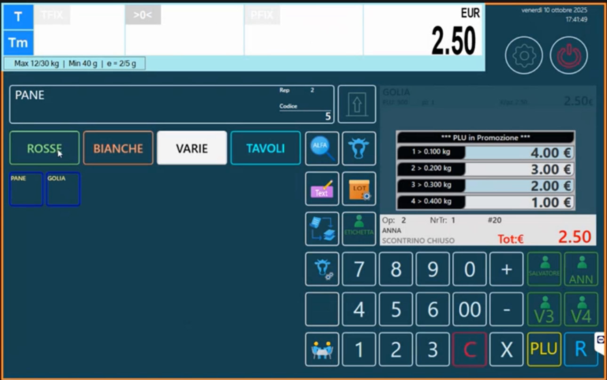
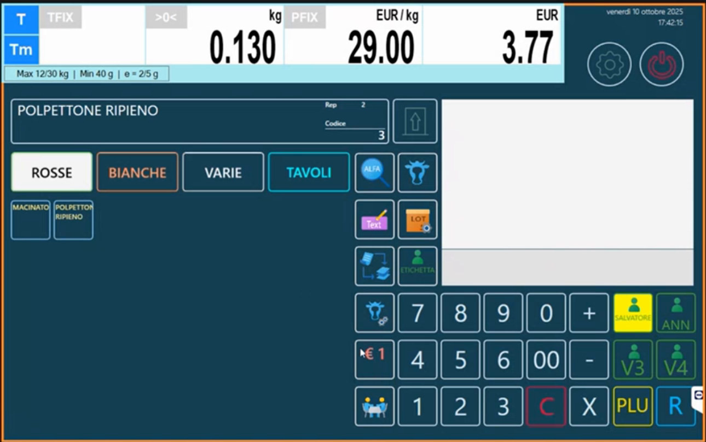
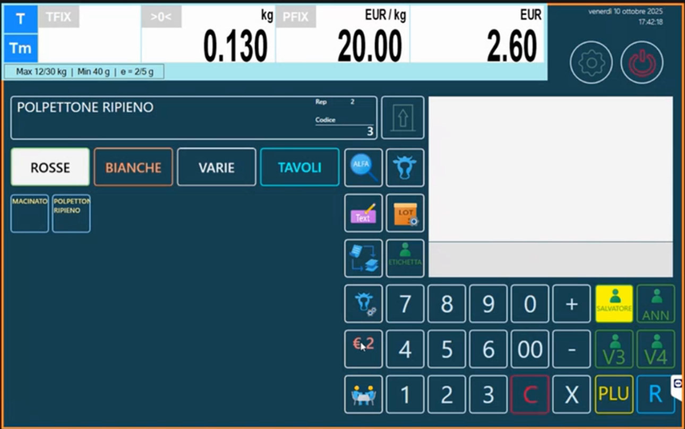
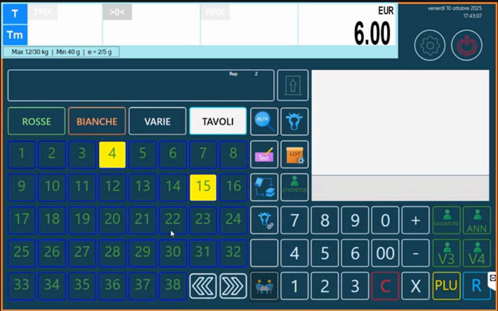
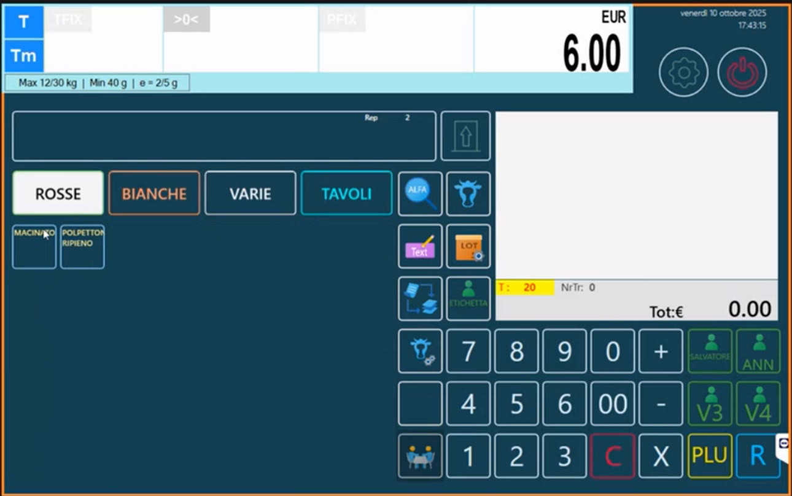
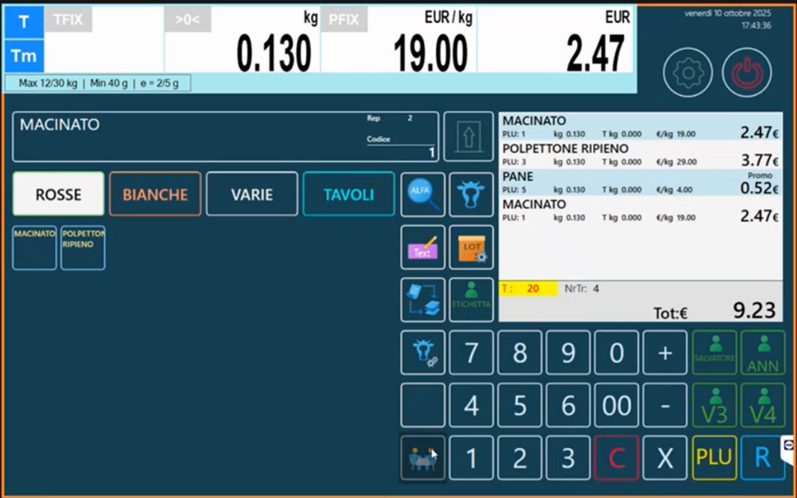
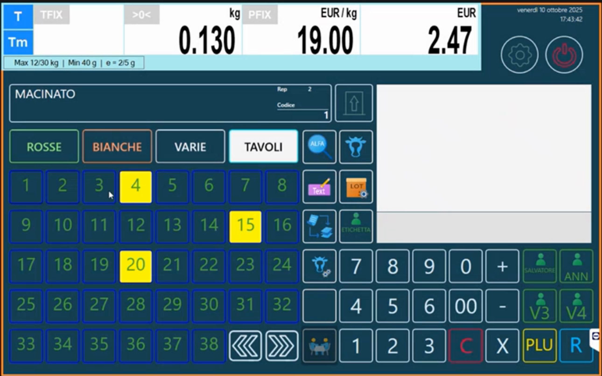
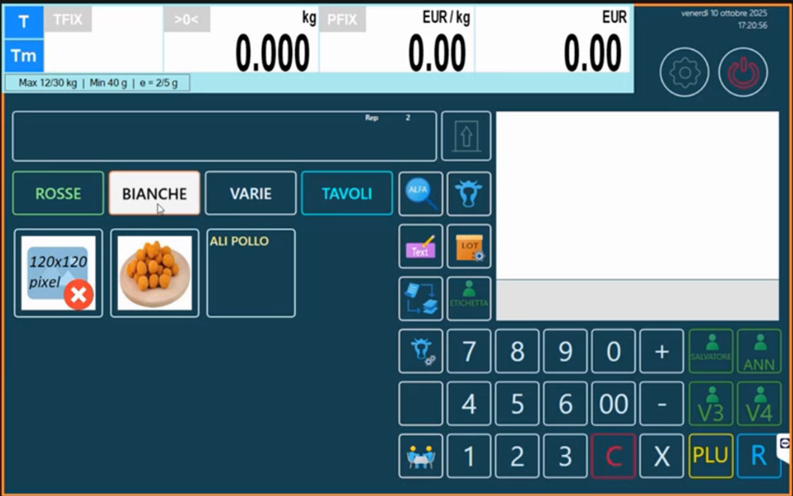

Funzioni di vendita: operatori, listini, tavoli e tastiere con immagini
Target: tecnico installatore / rivenditore.
Obiettivo
Conoscere le funzioni della schermata di vendita in modalità Multipesata e come attivarle: operatore impegnato, doppio listino, tavoli e conti sospesi, tastiere con tasti grandi e doppi e immagini sui tasti.
Come si presenta la vendita
Nella tastiera RETAIL => 4 Operatori la schermata mostra le schede (nell'esempio ROSSE, BIANCHE, VARIE, TAVOLI), i tasti articolo, i tasti funzione e i tasti operatore (SALVATORE, ANN, V3, V4).

Per vendere un articolo: tocca l'articolo, appoggia il peso, carica; quando serve lo scontrino tocca l'operatore e poi totale. Si possono aggiungere articoli liberi sull'operatore stesso.
Operatore impegnato
Nelle Opzioni Multipesata (Configurazione Operativa) l'opzione Visualizza Operatore Impegnato (disattivata di default) fa colorare di giallo il tasto dell'operatore che sta lavorando. Gli altri operatori vedono subito che quel tasto è occupato e non lo usano. Quando lo scontrino viene emesso, il tasto torna libero.

Doppio listino
Se in anagrafica è definito un Prezzo Alternativo (Articoli PLU, scheda Extra) si può passare da listino 1 a listino 2 con un tasto funzione dedicato (assegnato in Configurazione Tastiera). Il tasto mostra € 1 o € 2: cambiando listino cambia il prezzo mostrato sopra. Per esempio, se sei nel mezzo di un lavoro con il listino 1 e devi emettere lo scontrino al listino 2, attivi il listino 2, confermi sull'operatore e vai in chiusura.


Tavoli e conti sospesi
La scheda TAVOLI permette di gestire conti sospesi (tavoli occupati e conti aperti). La funzione è in fase di ampliamento. I conti sono condivisi su tutti i banchi collegati in rete: non sono legati al banco come lo scontrino, ma valgono indipendentemente dal banco.
Per attivarla tocca TAVOLI: si apre una schermata con i tavoli (numeri da 1 a 38, con frecce per scorrere), dove i tavoli occupati sono colorati di giallo.

Come si usa:
- Tocca il tavolo (o il conto) di riferimento: viene indicato in alto.
- Carica gli articoli che servono.
- Se non chiudi lo scontrino, il tavolo resta occupato con il suo conto aperto.
- Per richiamare il conto, tocca il tavolo che ti interessa, poi totale per fare la chiusura.
- Toccando di nuovo TAVOLI passi dalla modalità tavolo alla modalità bilancia con scontrino normale.



La scheda TAVOLI si crea in Schede Tastiera con Tipo Scheda Tavoli.
Tastiere con tasti grandi e tasti doppi
Cambiando il Tipo Tastiera nelle Opzioni Multipesata la tastiera si trasforma:
| Tipo Tastiera | Risultato |
|---|---|
| RETAIL => 4 Operatori | Tasti standard, piccoli |
| RETAIL Tasti X4 | Tasti grandi quadrati |
| RETAIL Tasti X2 | Tasti doppi in orizzontale |
| RETAIL Tasti X2 (V) | Tasti doppi in verticale |
Passare da una all'altra è molto semplice: Configurazione Operativa > Opzioni Multipesata > Tipo Tastiera; uscendo dal configuratore la bilancia si ritrasforma da sola.
Immagini sui tasti
Con Abilita immagini tastiera RETAIL attivo, ogni tasto può mostrare l'Immagine Tasto dell'articolo (Articoli PLU, scheda Immagini). Le immagini non vengono ridimensionate: devono avere le dimensioni del tasto.
| Tasto | Immagine |
|---|---|
| Quadrato grande | 120x120 pixel |
| Piccolo standard | 60x60 pixel |
| Doppio in orizzontale | 120x60 pixel |
| Doppio in verticale | 60x120 pixel |
Se l'immagine è troppo piccola per il tasto (per esempio una 60x60 su un tasto grande da 120x120) la bilancia non la mostra e visualizza un segnaposto con la dicitura "120x120 pixel" e una croce rossa. Sui tasti doppi, invece, un'immagine 60x60 viene mostrata centrata.

Quando conviene usarle
Le immagini sui tasti hanno molto effetto in dimostrazione, ma sono poco pratiche in uso quotidiano. Per il lavoro di tutti i giorni è preferibile la tastiera Retail standard.
Tastiera Retail anche in etichettatura
Nelle Opzioni Etichetta il Tipo Tastiera si può impostare su Retail: in modalità di etichettatura si porta dietro le impostazioni fatte in multipesata.
Altre funzioni utili in vendita
- Ingredienti a video: toccando il nome dell'articolo si vedono gli ingredienti di tutti i box attivi (Box ingredienti e tabelle testi).
- Promozioni in vendita: riquadro con le soglie, prezzo ricalcolato, storno dalle pesate (Promozioni).
- Tasto di pulizia schermo (Pulizia Touch) e ricerca alfanumerica (PLU => Ricerca Alfa): vedi Configurazione Tastiera.
Errori comuni
| Problema | Causa probabile | Rimedio |
|---|---|---|
| Il tasto operatore non si colora | Visualizza Operatore Impegnato disattivato | Attivalo in Opzioni Multipesata |
| Non si passa da listino 1 a 2 | Manca il tasto funzione o il Prezzo Alternativo | Crea il tasto in Configurazione Tastiera e valorizza il prezzo alternativo |
| Compare il segnaposto rosso al posto dell'immagine | Dimensioni dell'immagine non adatte al tasto | Prepara l'immagine alla dimensione del tasto |
| La scheda TAVOLI non compare | Tipo Scheda diverso da Tavoli | Controlla la scheda in Schede Tastiera |